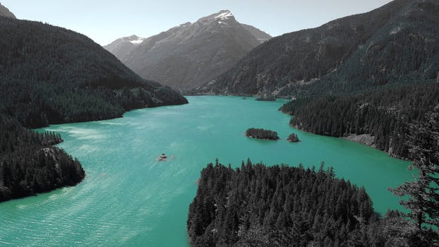

We are associated with


 Call Support
Call Support
Nepal is often referred as the Paradise on earth. This tiny nation covers a very small proportion on earth but still consists of many different cultures and land features. This small landlocked country is home to some of the rare flora and fauna. The land has been a mystery for the world till the e50’s before it started letting foreigners in.
 Before that few pilgrims and officers of British Army got the privilege to visit this country hidden in the lap of the highest mountains in the world. With a written history dating back from the 5th century A.D, Nepal has more myths and legend than any other country.
Nepal is still a mysterious land of the living goddess, lots of festival and feasts and the best harmony among religions. This land of fantasies has millions of gods and goddess, thousands and is home ot the vibrant Hindu culure. This holy land being a Hindu country is also the birth place of Lord Buddha, who was born in western Nepal about 2500 years ago, making it one of the biggest pilgrimages for the Buddhist all over the world.
Nepal is still a mysterious land of the living goddess, lots of festival and feasts and the best harmony among religions. This land of fantasies has millions of gods and goddess, thousands and is home ot the vibrant Hindu culure. This holy land being a Hindu country is also the birth place of Lord Buddha, who was born in western Nepal about 2500 years ago, making it one of the biggest pilgrimages for the Buddhist all over the world.
Nepal is still a mysterious land of the living goddess, lots of festival and feasts and the best harmony among religions. This land of fantasies has millions of gods and goddess, thousands and is home ot the vibrant Hindu culure. This holy land being a Hindu country is also the birth place of Lord Buddha, who was born in western Nepal about 2500 years ago, making it one of the biggest pilgrimages for the Buddhist all over the world.
Nepal is still a mysterious land of the living goddess, lots of festival and feasts and the best harmony among religions. This land of fantasies has millions of gods and goddess, thousands and is home ot the vibrant Hindu culure. This holy land being a Hindu country is also the birth place of Lord Buddha
Nepal is often referred as the Paradise on earth. This tiny nation covers a very small proportion on earth but still consists of many different cultures and land features. This small landlocked country is home to some of the rare flora and fauna. The land has been a mystery for the world till the e50’s before it started letting foreigners in. Before that few pilgrims and officers of British Army got the privilege to visit this country hidden in the lap of the highest mountains in the world. With a written history dating back from the 5th century A.D, Nepal has more myths and legend than any other country.
Nepal is still a mysterious land of the living goddess, lots of festival and feasts and the best harmony among religions. This land of fantasies has millions of gods and goddess, thousands and is home ot the vibrant Hindu culure. This holy land being a Hindu country is also the birth place of Lord Buddha, who was born in western Nepal about 2500 years ago, making it one of the biggest pilgrimages for the Buddhist all over the world.